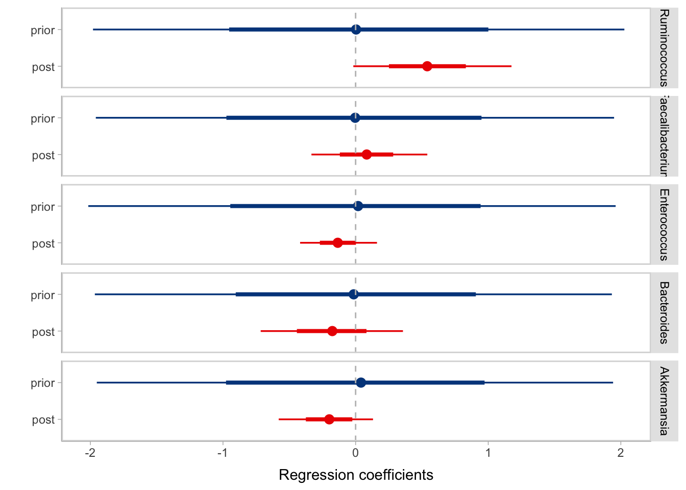

Chapter 3 Fig 3
3.1 3B: stacked bar chart.
library(tidyverse)
library(vdbR)
library(ggpubr)
connect_database('~/dbConfig.txt')
get_table_from_database("asv_annotation_blast_color_ag");# my table of the CART stool cohort
stb <- read_csv('data/amplicon/stool/combined_2_meta.csv')
# get the counts from database and also the color for the asv
counts_data <- get_counts_subset(stb$sampleid)dat <- counts_data %>%
select(asv_key:count_total, count_relative) %>%
left_join(asv_annotation_blast_color_ag %>%
select(asv_key,color_label_group_distinct), by = "asv_key")
# there are some ASVs that don't have a color with it, but can use the color for the genus level
color_group <- dat %>%
split(is.na(.$color_label_group_distinct))
# find the genus for these asv
get_table_from_database('asv_annotation_blast_ag')
no_color <- color_group %>%
pluck('TRUE') %>%
distinct(asv_key) %>%
inner_join(asv_annotation_blast_ag %>%
select(asv_key, genus))
# find the colors for these genera
genera_colors <- no_color %>%
distinct(genus) %>%
inner_join(asv_annotation_blast_color_ag %>%
distinct(genus, color_label_group_distinct))
# the full df for the no color genera
no_color_df <- no_color %>%
left_join(genera_colors)
no_color_df_full <- color_group %>%
pluck('TRUE') %>%
select(-color_label_group_distinct) %>%
left_join(no_color_df %>%
select(- genus))
# so if the genus is unknown then it's gonna be assigned "other" gray color
# the question is do we go one taxa level higher or make a new color base and shades for the new asv
# after discussing with Tsoni, we decided that it's ok to assign gray to the unknown genus
# merge the new no_color_df_full to the original df
dat <- bind_rows(
no_color_df_full,
color_group %>%
pluck('FALSE')
)
dat %>% write_csv('data/the_data_to_make_panel_B.csv')# the color palette (inherited from Ying, used in lots of project in our lab, the palette used in the NEJM paper Fig 2D https://www.nejm.org/doi/full/10.1056/NEJMoa1900623)
asv_color_set <- asv_annotation_blast_color_ag %>%
distinct(color,color_label_group_distinct,color_label_group,color_base) %>%
select(color_label_group_distinct, color) %>%
deframe()# calculate the beta diversity between the samples which deicide the order of the samples in the plot
cbd <- compute_beta_diversity_and_tsne(sampleid = dat$sampleid,
taxonomy = dat$color_label_group_distinct,
count = dat$count);
#compute beta diversity
cbd$compute_beta_diversity()## Time:Composition_matrix:
## Time difference of 0.01121807 secs
## Time:Bray-Curtis matrix:
## Time difference of 0.160646 secs#get beta diversity
d_beta <- cbd$get_betadiversity()
#compute hierarchical cluster
hc <- hclust(as.dist(d_beta), method = 'complete')
dend <- as.dendrogram(hc)
sample_dendogram_order <- labels(dend)
# dividing the samples to lower and higher diversity
div_order <- stb %>%
arrange(simpson_reciprocal) %>%
pull(sampleid)
###
# how about splitting the above dendrogram order into the low and higher diversity groups
div_med <- median(stb$simpson_reciprocal)
lower_samp <- stb %>%
filter(simpson_reciprocal <= div_med) %>%
pull(sampleid)
lower_samp_o <- sample_dendogram_order[sample_dendogram_order %in% lower_samp]
higher_samp_o <- sample_dendogram_order[!sample_dendogram_order %in% lower_samp]
dat$sampleid = factor(dat$sampleid,levels = c(lower_samp_o, higher_samp_o))
ggplot(dat,aes(sampleid, count_relative, fill = color_label_group_distinct) ) +
geom_bar(stat = "identity", position="fill", width = 1) +
theme_classic() +
labs(title = '',
ylab = 'Relative counts') +
theme(axis.text.x = element_text(angle = 90),
axis.text.y = element_blank(),
legend.position = "none") +
scale_fill_manual(values = asv_color_set) +
ggsave('figs/amplicon/stacked_bar_sorted_with_hclust_lower_and_higher_diversity.pdf', width = 7, height = 5)
3.2 3C: alpha and beta diversity between CART patients and healthy volunteers
3.2.1 alpha diversity (Simpson’s reciprocal)
library(vdbR)
connect_database('~/dbConfig.txt')
get_table_from_database("healthy_volunteers_ag")
get_table_from_database("asv_alpha_diversity_ag")## [1] "table asv_alpha_diversity_ag is loaded and filtered for duplicates. Only the replicate of highest coverage is retained."# a total of 75 samples
alpha <- bind_rows(
stb %>% select(sampleid, simpson_reciprocal) %>% mutate(grp = 'baseline_CART'),
asv_alpha_diversity_ag %>%
select(sampleid, simpson_reciprocal) %>%
inner_join(healthy_volunteers_ag %>% select(sampleid), by = "sampleid") %>%
mutate(grp = 'healthy')
) %>%
distinct(sampleid, .keep_all = T)
alpha %>%
ggboxplot(x = 'grp', y = 'simpson_reciprocal', add = 'jitter',
title = '', ylab = 'Fecal diversity (Simpson Reciprocal)', xlab = '',
palette = c('#ED0000','#00468B')) +
stat_compare_means(comparisons= list(c('healthy', 'baseline_CART')),
label= "p.format",
method= 'wilcox.test')
3.2.2 beta diversity (PCOA of Bray-Curtis)
PCOA of Bray-Curtis distance with counts matrix at ASV level using an abundannce threshold of 0.01% and a prevalence threshold of 25% between healthy and CART cohort.
library(vdbR)
connect_database('~/dbConfig.txt')
healthy <- healthy_volunteers_ag %>%
inner_join(asv_alpha_diversity_ag, by = c("sampleid", "oligos_id"))
cts <- get_counts_subset(c(stb$sampleid, healthy %>% pull(sampleid)))
# a total of 75 samples counts. there are 3 healthy samples I don't have count .
nsamp <- cts %>%
distinct(sampleid) %>%
nrow
all_pheno <- bind_rows(healthy %>%
select(sampleid) %>%
mutate(grp = 'healthy', center = 'healthy'),
stb %>% select(sampleid, center) %>%
mutate(grp = 'CART') %>%
select(sampleid, grp, center)
) %>%
ungroup %>%
distinct(sampleid, .keep_all = T) %>%
inner_join(asv_alpha_diversity_ag %>%
distinct(sampleid, .keep_all = T) %>%
distinct(path_pool, sampleid))
# filter >0.01% in more than 25% samples
keepa <- cts %>%
filter(count_relative > 0.0001) %>%
count(asv_key) %>%
filter(n > floor(nsamp * 0.25)) %>%
pull(asv_key)
cts_fil <- cts %>%
filter(asv_key %in% keepa) %>%
select(sampleid, asv_key,count_relative ) %>%
spread(key = 'asv_key', value = 'count_relative', fill = 0) %>%
column_to_rownames('sampleid')
library(vegan)
dist_ <- vegdist(cts_fil, method = 'bray')
eigen <- pcoa(dist_)$values$Eigenvalues
percent_var <- signif(eigen/sum(eigen), 3)*100
bc <- cmdscale(dist_, k = 2)
bc %>%
as.data.frame() %>%
rownames_to_column('sampleid') %>%
ungroup() %>%
inner_join(all_pheno) %>%
distinct() %>%
ggscatter(x = 'V1', y = 'V2', color = 'grp') +
labs(title = 'PCOA of healthy and CART patients') +
xlab(paste0("PC 1 [",percent_var[1],"%]")) +
ylab(paste0("PC 2 [",percent_var[2],"%]")) +
#theme_void() +
ggsave('figs/PCOA(bray-curtis) of healthy and CART patients.pdf')
The PCOA with only CART patients data using the same filtering threshold but colored with the different pools they are sequenced from.
# a pcoa at asv level to show they are from different pools and well mixed
cts <- get_counts_subset(c(stb$sampleid))
# filter >0.01% in more than 25% samples
keepa <- cts %>%
filter(count_relative > 0.0001) %>%
count(asv_key) %>%
filter(n > floor(nsamp * 0.25)) %>%
pull(asv_key)
cts_fil <- cts %>%
filter(asv_key %in% keepa) %>%
select(sampleid, asv_key,count_relative ) %>%
spread(key = 'asv_key', value = 'count_relative', fill = 0) %>%
column_to_rownames('sampleid')
dist_ <- vegdist(cts_fil, method = 'bray')
eigen <- pcoa(dist_)$values$Eigenvalues
percent_var <- signif(eigen/sum(eigen), 3)*100
bc <- cmdscale(dist_, k = 2)
mp <- bc %>%
as.data.frame() %>%
rownames_to_column('sampleid') %>%
ungroup() %>%
inner_join(all_pheno) %>%
distinct(sampleid, .keep_all = T) %>%
mutate(pool = str_extract(path_pool, 'Sample.+/')) %>%
mutate(pool = str_replace(pool, 'Sample_','')) %>%
mutate(pool = if_else(str_detect(pool, 'IGO'), str_extract(pool, 'IGO.+$'), pool)) %>%
mutate(pool = str_replace(pool, '_1/|_comple.+$',''))
mp %>%
ggscatter(x = 'V1', y = 'V2', color = 'pool', size = 3) +
labs(title = 'PCOA of CART patients') +
xlab(paste0("PC 1 [",percent_var[1],"%]")) +
ylab(paste0("PC 2 [",percent_var[2],"%]")) +
#theme_void() +
ggsave('figs/PCOA(bray-curtis) (ASV level)of CART patients_pool.pdf', width = 9, height = 9)
3.3 Fig 3 E&F Lefse analysis with taxa abundance at ASV level
library(tidyverse)
library(ggpubr)# sort out the asv counts table and also do filtering (need to have all taxa levels)
meta <- read_csv('data/amplicon/stool/combined_2_meta.csv')
library(vdbR)
connect_database('~/dbConfig.txt')
get_table_from_database('asv_annotation_blast_ag')
cts <- get_counts_subset(meta$sampleid)
cts_ <- cts %>%
select(asv_key, sampleid, count_relative) %>%
spread(key = 'sampleid', value = 'count_relative', fill = 0)
annot <- asv_annotation_blast_ag %>%
filter(asv_key %in% cts_$asv_key) %>%
mutate(ordr = if_else(is.na(ordr), str_glue('unknown_of_class_{class}'), ordr),
family = if_else(is.na(family), str_glue('unknown_of_order_{ordr}'), family),
genus = if_else(is.na(genus) , str_glue('unknown_of_family_{family}'), genus),
species = if_else(is.na(species) , str_glue('unknown_of_genus_{genus}'), species)) %>%
mutate(taxa_asv = str_glue('k__{kingdom}|p__{phylum}|c__{class}|o__{ordr}|f__{family}|g__{genus}|s__{species}|a__{asv_key}'))
cts_all <- cts_ %>%
full_join(annot %>% select(asv_key, taxa_asv), by = 'asv_key') %>%
select(-asv_key) %>%
gather('sampleid', 'relab', names(.)[1]:names(.)[ncol(.)-1]) %>%
left_join(meta %>% select(sampleid, cr_d100, toxicity), by = 'sampleid')
# the asv to keep
# keep the asvs that show up in at least 25% of the samples
keepg <- cts_all %>%
filter(relab > 0.0001) %>%
ungroup() %>%
count(taxa_asv) %>%
filter(n > floor(nrow(meta) * 0.25)) %>%
pull(taxa_asv)
cts_fil <- cts_all %>%
filter(taxa_asv %in% keepg) %>%
spread('sampleid', 'relab', fill = 0)# the pheno label for the samples
pheno <- meta %>%
select(center, cr_d100:crs, icans, sampleid) %>%
gather('pheno', 'value', cr_d100:icans)
all_sub_pheno <- pheno %>%
split(., list(.$pheno)) %>%
purrr::imap(~ filter(.data = ., value != 'not_assessed'))
tpheno <- all_sub_pheno %>%
imap(function(.x, .y){
select(.data = .x, value) %>%
t() %>% write.table(str_glue('data/amplicon/lefse/pull_{.y}.txt'), sep = '\t', quote = F, row.names = T, col.names = F)
})
tcts <- all_sub_pheno %>%
map(~ pull(.data = ., sampleid) ) %>%
imap(~ cts_fil %>% select(taxa_asv, matches(.x)) %>% write_tsv(str_glue('data/amplicon/lefse/{.y}_asv_tcts.tsv'))) cat data/amplicon/lefse/pull_toxicity.txt data/amplicon/lefse/toxicity_asv_tcts.tsv > data/amplicon/lefse/pull_toxicity_asv_tcts.tsv
cat data/amplicon/lefse/pull_cr_d100.txt data/amplicon/lefse/cr_d100_asv_tcts.tsv > data/amplicon/lefse/pull_cr_d100_asv_tcts.tsv fns <- list.files('data/amplicon/lefse/', pattern = 'pull.*_asv_tcts.tsv$')
cmds <- tibble(
fns = fns
) %>%
mutate(format_cmd = str_glue('lefse_format_input.py {fns} {fns}.in -c 1 -u 2 -o 1000000 ')) %>%
mutate(run_cmd = str_glue('lefse_run.py -l 4 {fns}.in {fns}.res')) %>%
mutate(plot_cmd = str_glue('lefse_plot_res.py {fns}.res {fns}.pdf --format pdf --feature_font_size 4 --width 10 --dpi 300 --title {fns}')) %>%
mutate(clado_cmd = str_glue('lefse_plot_cladogram.py {fns}.res {fns}_clado.pdf --label_font_size 4 --dpi 300 --format pdf --title {fns}')) %>%
select(-fns) %>%
gather() %>%
select(value) %>%
write_csv('data/amplicon/lefse/lefse_run_cmd_taxa.sh', col_names = F)# run in terminal:
# bash /Users/daia1/projects/CART_and_microbiome/data/amplicon/lefse/lefse_run_cmd_taxa.sh# visualize the results in ggplot
# the input : lefse res files
fns <- list.files('data/amplicon/lefse/', pattern = 'pull.*_asv_tcts.tsv.res$', full.names = T)
# join all of the tables feature together
feature <- fns %>%
set_names(fns) %>%
map(~ read_tsv(., col_names = c('feature','xx','direction','score','pval')) %>%
filter(!is.na(score))) %>%
bind_rows(.id = 'group') %>%
mutate(group = str_replace(group, 'data/amplicon/lefse//pull_','')) %>%
mutate(group = str_replace(group, '_asv_tcts.tsv.res$',''))
# change the "N" direction to be minus score
feature <- bind_rows(
feature %>%
split(.$direction) %>%
pluck('no') %>%
mutate(score = -score),
feature %>%
split(.$direction) %>%
pluck('yes')
) %>%
arrange(group, feature, score) %>%
mutate(feature = str_replace_all(feature, '^.+\\.', ''))
all_title_fs <- 20
axis_text_fs <- 16
CR <- feature %>%
filter(group == 'cr_d100') %>%
ggplot(aes(x = reorder(feature, score), y = score, fill = direction)) +
geom_bar( stat = 'identity') +
coord_flip() +
scale_color_manual(values = c('#925E9F', '#42B540')) +
scale_fill_manual(values = c('#925E9F', '#42B540')) +
theme_classic() +
theme(axis.title.y = element_blank(),
plot.title = element_text(size=all_title_fs),
axis.title.x = element_text(size=axis_text_fs),
axis.text.x = element_text(size=axis_text_fs),
legend.position='bottom') +
labs(title = str_glue('Response to CR') ,
y = 'Score')
tox <- feature %>%
filter(group == 'toxicity') %>%
ggplot(aes(x = reorder(feature, score), y = score, fill = direction)) +
geom_bar(stat = 'identity') +
coord_flip() +
scale_color_manual(values = c('#0099B4', '#AD002A')) +
scale_fill_manual(values = c('#0099B4', '#AD002A')) +
theme_classic() +
theme(axis.title.y = element_blank(),
axis.title.x = element_text(size=axis_text_fs),
plot.title = element_text(size=all_title_fs),
axis.text.x = element_text(size=axis_text_fs),
legend.position="bottom") +
labs(title = str_glue('Response to Toxicity') ,
y = 'Score')
g <- cowplot::plot_grid(CR,tox,
nrow = 2,
align = 'hv',
rel_heights = c(1.8,1.2),
axis = 'b') +
ggsave('figs/amplicon/16s_lefse_combined.pdf', device = 'pdf', height = 15, width = 15)
g
It is important to check the relative abundance of the significant taxa visually.
# to see the relative abundance of those taxa
# to get the top and bottom three taxa of the lefse results
res <- list.files('data/amplicon/lefse/', pattern = 'asv_tcts.tsv.res$', full.names = T)
# gather the species level taxa in the lefse significant results
res_all <- res %>%
set_names(res) %>%
map(~ read_tsv(., col_names = c('feature','xx','direction','score','pval')) %>%
filter(!is.na(score))) %>%
keep(~ nrow(.) > 0) %>%
bind_rows(.id = 'res') %>%
mutate(res = str_replace(res, '^.+//',''),
res = str_replace(res, '_asv.+$','')) %>%
rename(grp = res) %>%
filter(grp %in% c('pull_cr_d100','pull_toxicity')) %>%
mutate(feature = str_replace_all(feature, '\\.','\\|')) %>%
#split(., list(.$grp, .$direction)) %>%
#map_dfr(~ top_n(x = ., n = 4, wt = score) %>% arrange(-score)) %>%
# filter(str_detect(feature, 's__.+$')) %>%
# filter(!str_detect(feature, 'a__.+$')) %>%
filter(str_detect(feature, 'g__.+$')) %>%
filter(!str_detect(feature, 's__.+$')) %>%
mutate(feature = str_replace(feature, '^.+g__','')) %>%
mutate(feature = str_replace(feature, '_Clostridium_', '[Clostridium]')) %>%
ungroup()
# plot the relab of those taxa (at species level) in boxplot
# get the species counts of the sampels
cts_spp <- cts_ %>%
full_join(annot %>% select(asv_key, species), by = 'asv_key') %>%
select(-asv_key) %>%
gather('sampleid', 'relab', names(.)[1]:names(.)[ncol(.)-1]) %>%
group_by(sampleid, species) %>%
summarise(Relab = sum(relab)) %>%
select(sampleid, species, Relab) %>%
left_join(meta %>% select(sampleid, cr_d100, toxicity), by = 'sampleid') %>%
ungroup()
cts_genus <- cts_ %>%
full_join(annot %>% select(asv_key, genus), by = 'asv_key') %>%
select(-asv_key) %>%
gather('sampleid', 'relab', names(.)[1]:names(.)[ncol(.)-1]) %>%
group_by(sampleid, genus) %>%
summarise(Relab = sum(relab)) %>%
select(sampleid, genus, Relab) %>%
left_join(meta %>% select(sampleid, cr_d100, toxicity), by = 'sampleid') %>%
ungroup()
joined <- cts_genus %>%
inner_join(res_all, by = c('genus' = 'feature'))
# finally I can do the plotting
joined %>%
filter(grp == 'pull_cr_d100') %>%
ggboxplot(x = 'cr_d100', y = 'Relab', add = 'jitter', title = 'Outcome: cr_d100') +
facet_wrap(direction ~ genus, scales="free_y") +
ggsave('figs/amplicon/lefse_taxa_crd100.pdf', width = 15, height = 13)
As can be observed in the boxplot, patients that had a CR have higher median relative abundance in Ruminococcus.
joined %>%
filter(grp == 'pull_toxicity') %>%
ggboxplot(x = 'toxicity', y = 'Relab', add = 'jitter', title = 'Outcome: toxicity') +
facet_wrap(direction ~ genus, scales="free_y") +
ggsave('figs/amplicon/lefse_taxa_toxicity.pdf', width = 15, height = 13) As can be observed in the boxplot, patients that had a toxicity response have clearly higher median relative abundance in Bacteroides.
As can be observed in the boxplot, patients that had a toxicity response have clearly higher median relative abundance in Bacteroides.
3.4 Fig 3D Bayesian modeling with microbiome alpha diversity as predictor
The formular is: CR/Toxicity ~ alpha diversity + center
library(rethinking)
meta <- read_csv('data/amplicon/stool/combined_2_meta.csv') %>%
mutate(logdiv_s = scale(log(simpson_reciprocal))) %>%
mutate(tox = if_else(toxicity == 'yes', 1, 0),
cr100 = if_else(cr_d100 == 'yes', 1, 0),
loca = if_else(center == 'M', 1, 2)) %>% # MSK 1 ; Upenn 2
mutate(center = factor(center),
toxicity = factor(toxicity, levels = c('no','yes')),
cr_d100 = factor(cr_d100, levels = c('no','yes')))
meta %>% write_csv('data/amplicon/stool/combined_2_meta_expanded.csv')
set.seed(123)
dat_list <- list(
tox = meta$tox,
crs3 = meta$crs3,
cr100 = meta$cr100,
location = meta$loca,
logdiv_s = meta$logdiv_s
)## Warning: Unknown or uninitialised column: `crs3`.# outcome: toxicity
mtox <- ulam(
alist(
tox ~ dbinom( 1 , p ) ,
logit(p) <- b*logdiv_s + a[location] ,
b ~ dnorm( 0 , 2),
a[location] ~ dnorm( 0 , 0.5 )
) , data=dat_list , chains=4 , log_lik=TRUE , cores = 8)
# make the forest plot
df <- precis(mtox, prob = 0.95) %>% as.tibble()## Warning: `as.tibble()` was deprecated in tibble 2.0.0.
## Please use `as_tibble()` instead.
## The signature and semantics have changed, see `?as_tibble`.## Warning in class(x) <- c(setdiff(subclass, tibble_class), tibble_class): Setting
## class(x) to multiple strings ("tbl_df", "tbl", ...); result will no longer be an
## S4 objectdf <- df %>%
mutate(variable = 'simpson_reciprocal')
#remove row number 1 (The intercept)
df %>%
ggplot(aes(x = reorder(variable, mean), y = mean)) +
geom_point(shape = 15,
size = 4, width = 0.1,
position = "dodge", color="black") +
geom_errorbar(aes(ymin = `2.5%`,
ymax = `97.5%`),
width = 0.1,
size = 0.7,
position = "dodge", color="turquoise4") +
theme(axis.title = element_text(face = "bold")) +
#xlab("Variables") + ylab("Coefficient with 95% CI") +
coord_flip(ylim = c(-0.7, 1)) +
geom_hline(yintercept = 0, color = "red", size = 1) +
theme(axis.title = element_text(size = 0)) +
theme(axis.text = element_text(size = 14)) +
labs(title = '95% confidence interval of the coefficients\nfor standardized log transformed alpha diversity when outcome is toxicity',
x = '',
y = 'Association with Toxicity') +
ggsave('figs/amplicon/bayesian_div_tox.pdf', width = 5, height = 4)## Warning: Ignoring unknown parameters: width## Warning: Width not defined. Set with `position_dodge(width = ?)`
## Warning: Width not defined. Set with `position_dodge(width = ?)`
# outcome : CR_d100
mcr <- ulam(
alist(
cr100 ~ dbinom( 1 , p ) ,
logit(p) <- b*logdiv_s + a[location] ,
b ~ dnorm( 0 , 2),
a[location] ~ dnorm( 0 , 0.5 )
) , data=dat_list , chains=4 , log_lik=TRUE , cores = 8)
df <- precis(mcr, prob = 0.95) %>% as.tibble()## Warning in class(x) <- c(setdiff(subclass, tibble_class), tibble_class): Setting
## class(x) to multiple strings ("tbl_df", "tbl", ...); result will no longer be an
## S4 objectdf <- df %>%
mutate(variable = 'simpson_reciprocal')
#remove row number 1 (The intercept)
df %>%
ggplot(aes(x = reorder(variable, mean), y = mean)) +
geom_point(shape = 15,
size = 4, width = 0.1,
position = "dodge", color="black") +
geom_errorbar(aes(ymin = `2.5%`,
ymax = `97.5%`),
width = 0.1,
size = 0.7,
position = "dodge", color="turquoise4") +
theme(axis.title = element_text(face = "bold")) +
xlab("Variables") + ylab("Coefficient with 95% CI") +
coord_flip(ylim = c(-0.7, 1)) +
geom_hline(yintercept = 0, color = "red", size = 1) +
theme(axis.title = element_text(size = 0)) +
theme(axis.text = element_text(size = 14)) +
labs(title = '95% confidence interval of the coefficients\nfor standardized log transformed alpha diversity when outcome is CR') +
ggsave('figs/amplicon/bayesian_div_cr.pdf', width = 5, height = 4)## Warning: Ignoring unknown parameters: width## Warning: Width not defined. Set with `position_dodge(width = ?)`
## Warning: Width not defined. Set with `position_dodge(width = ?)`
3.5 Fig 3G Bayesian modeling with 5 genera abundance as predictor(outcome CR)
genera <- read_csv('data/amplicon/stool/combined_5_genera.csv')
# do not standardize the log transformed relative abundance
meta <- read_csv('data/amplicon/stool/combined_2_meta_expanded.csv') %>%
inner_join(genera)
dat_list <- list(
tox = meta$tox,
cr100 = meta$cr100,
location = meta$loca,
Akkermansia = meta$Akkermansia,
Bacteroides = meta$Bacteroides,
Enterococcus = meta$Enterococcus,
Faecalibacterium = meta$Faecalibacterium,
Ruminococcus = meta$Ruminococcus
) CR ~ Akkermansia + Bacteroides + Enterococcus + Faecalibacterium + Ruminococcus + center
gcr <- ulam(
alist(
cr100 ~ dbinom( 1 , p ) ,
logit(p) <- ba*Akkermansia + bb*Bacteroides + be*Enterococcus + bf*Faecalibacterium + br*Ruminococcus + a[location] ,
ba ~ dnorm( 0 , 1),
bb ~ dnorm( 0 , 1),
be ~ dnorm( 0 , 1),
bf ~ dnorm( 0 , 1),
br ~ dnorm( 0 , 1),
a[location] ~ dnorm( 0 , 0.5 )
) , data=dat_list , chains=4 , log_lik=TRUE , cores = 16)
df <- precis(gcr, prob = 0.95) %>% as.tibble()## Warning in class(x) <- c(setdiff(subclass, tibble_class), tibble_class): Setting
## class(x) to multiple strings ("tbl_df", "tbl", ...); result will no longer be an
## S4 objectdf <- df %>%
mutate(variable = c('Akkermansia', 'Bacteroides','Enterococcus','Faecalibacterium','Ruminococcus'))
#remove row number 1 (The intercept)
df %>%
ggplot(aes(x = variable, y = mean)) +
geom_point(shape = 15,
size = 4, width = 0.1,
position = "dodge", color="black") +
geom_errorbar(aes(ymin = `2.5%`,
ymax = `97.5%`),
width = 0.1,
size = 0.7,
position = "dodge", color="turquoise4") +
theme(axis.title = element_text(face = "bold")) +
xlab("Variables") + ylab("Coefficient with 95% CI") +
coord_flip(ylim = c(-1.5, 1.5)) +
geom_hline(yintercept = 0, color = "red", size = 1) +
theme(axis.title = element_text(size = 0)) +
theme(axis.text = element_text(size = 14)) +
labs(title = 'CR') +
ggsave('figs/amplicon/bayesian_genera_cr_log10.pdf', width = 5, height = 4)## Warning: Ignoring unknown parameters: width## Warning: Width not defined. Set with `position_dodge(width = ?)`
## Warning: Width not defined. Set with `position_dodge(width = ?)`
3.6 Fig3H Histogram to illustrate the predicted probability of day100 CR
post <- extract.samples(gcr)
meta_ <- meta %>%
select(Akkermansia:Ruminococcus)
# the post coeffs in df format
postdf <- bind_cols(ba = post$ba, bb = post$bb, be = post$be, bf = post$bf, br = post$br, am = post$a[,1])
# use the 90% and 10% quantile patient data in terms of ruminococcus relab
N <- 100
# for the top and bottom quantile range of ruminococcus relab
ru_top <- meta_ %>%
filter(Ruminococcus >= quantile(meta$Ruminococcus, 0.9))
ru_bot <- meta_ %>%
filter(Ruminococcus <= quantile(meta$Ruminococcus, 0.1))
# a function to calculate the predicted probability with the randomly drawn coeff from the posterior distributionn and the log10 transformed relative abundance
per_pt_sample_post_prob <- function(lga_, lgb_, lge_, lgf_ , lgr_){
# the input is the log relab of the 5 genera for that patient
post_samp <- postdf %>%
sample_n(size = N, replace = F)
ret = pmap(post_samp, function(ba, bb, be, bf, br, am) {
inv_logit( ba * lga_ + bb * lgb_ + be * lge_ + bf * lgf_ + br * lgr_ + am )
}) %>%
set_names(seq(1, N)) %>%
bind_rows() %>%
gather()
return(ret)
}
# for the top quantile patients
res_top <- pmap(ru_top, function(Akkermansia, Bacteroides, Enterococcus, Faecalibacterium, Ruminococcus){
per_pt_sample_post_prob(Akkermansia, Bacteroides, Enterococcus, Faecalibacterium, Ruminococcus)
}) %>%
set_names(paste('P', seq(1, nrow(ru_top)), sep = '')) %>%
bind_rows(.id = 'pt')
# for the bottom quantile patients
res_bot <- pmap(ru_bot, function(Akkermansia, Bacteroides, Enterococcus, Faecalibacterium, Ruminococcus){
per_pt_sample_post_prob(Akkermansia, Bacteroides, Enterococcus, Faecalibacterium, Ruminococcus)
}) %>%
set_names(paste('P', seq(1, nrow(ru_bot)), sep = '')) %>%
bind_rows(.id = 'pt')
# plot them together in one
bind_rows(
res_top %>% mutate(grp = 'high Ruminococcus'),
res_bot %>% mutate(grp = 'low Ruminococcus')
) %>%
gghistogram(x = 'value',bins = 30, fill = 'grp', palette = 'nejm', color = 'white', add = 'mean',
xlab = 'Predicted probability of CR d100', ylab = 'Probability density')+
ggsave('figs/predicted_CR_Ruminococcus_top_bottom_10.pdf', width = 7, height = 5)
bind_rows(
res_top %>% mutate(grp = 'high Ruminococcus'),
res_bot %>% mutate(grp = 'low Ruminococcus')
) %>%
group_by(grp) %>%
summarise(ave = mean(value))## # A tibble: 2 x 2
## grp ave
## * <chr> <dbl>
## 1 high Ruminococcus 0.679
## 2 low Ruminococcus 0.265As can be observed from the histogram, when the patients have high Ruminococcus content (relative abundance in the top 10% of the current patient cohort), they are predicted to have on average a probability of 0.67 to have CR at day 100; whereas when they have low Ruminococcus content (relative abundance in the bottom 10% of the current patient cohort), they are predicted to have only on average a probability of 0.27 to have CR at day 100.
3.7 Fig 3I Bayesian modeling with 5 genera abundance as predictor(outcome toxicity)
Toxicity ~ Akkermansia + Bacteroides + Enterococcus + Faecalibacterium + Ruminococcus + center
gtox <- ulam(
alist(
tox ~ dbinom( 1 , p ) ,
logit(p) <- ba*Akkermansia + bb*Bacteroides + be*Enterococcus + bf*Faecalibacterium + br*Ruminococcus + a[location] ,
ba ~ dnorm( 0 , 1),
bb ~ dnorm( 0 , 1),
be ~ dnorm( 0 , 1),
bf ~ dnorm( 0 , 1),
br ~ dnorm( 0 , 1),
a[location] ~ dnorm( 0 , 0.5 )
) , data=dat_list , chains=4 , log_lik=TRUE , cores = 16)
df <- precis(gtox, prob = 0.95) %>% as.tibble()## Warning in class(x) <- c(setdiff(subclass, tibble_class), tibble_class): Setting
## class(x) to multiple strings ("tbl_df", "tbl", ...); result will no longer be an
## S4 objectdf <- df %>%
mutate(variable = c('Akkermansia', 'Bacteroides','Enterococcus','Faecalibacterium','Ruminococcus'))
#remove row number 1 (The intercept)
df %>%
ggplot(aes(x = variable, y = mean)) +
geom_point(shape = 15,
size = 4, width = 0.1,
position = "dodge", color="black") +
geom_errorbar(aes(ymin = `2.5%`,
ymax = `97.5%`),
width = 0.1,
size = 0.7,
position = "dodge", color="turquoise4") +
theme(axis.title = element_text(face = "bold")) +
xlab("Variables") + ylab("Coefficient with 95% CI") +
coord_flip(ylim = c(-1.5, 1.5)) +
geom_hline(yintercept = 0, color = "red", size = 1) +
theme(axis.title = element_text(size = 0)) +
theme(axis.text = element_text(size = 14)) +
labs(title = 'Toxicity') +
ggsave('figs/amplicon/bayesian_genera_tox_log10.pdf', width = 5, height = 4)## Warning: Ignoring unknown parameters: width## Warning: Width not defined. Set with `position_dodge(width = ?)`
## Warning: Width not defined. Set with `position_dodge(width = ?)`
3.8 Fig3J Histogram to illustrate the predicted probability of toxicity
# extract posterior samples
post <- extract.samples(gtox)
meta_ <- meta %>%
select(Akkermansia:Ruminococcus)
# the post coeffs in df format
postdf <- bind_cols(ba = post$ba, bb = post$bb, be = post$be, bf = post$bf, br = post$br, am = post$a[,1])
N <- 100
# for the top and bottom quantile range of Bacteroides relab (top and bottom 10%)
ba_top <- meta_ %>%
filter(Bacteroides >= quantile(meta$Bacteroides, 0.9))
ba_bot <- meta_ %>%
filter(Bacteroides <= quantile(meta$Bacteroides, 0.1))
# a function to calculate the predicted probability with the randomly drawn coeff from the posterior distributionn and the log10 transformed relative abundance
per_pt_sample_post_prob <- function(lga_, lgb_, lge_, lgf_ , lgr_){
# the input is the log relab of the 5 genera for that patient
post_samp <- postdf %>%
sample_n(size = N, replace = F)
ret = pmap(post_samp, function(ba, bb, be, bf, br, am) {
inv_logit( ba * lga_ + bb * lgb_ + be * lge_ + bf * lgf_ + br * lgr_ + am )
}) %>%
set_names(seq(1, N)) %>%
bind_rows() %>%
gather()
return(ret)
}
# for the top quantile patients
res_top <- pmap(ba_top, function(Akkermansia, Bacteroides, Enterococcus, Faecalibacterium, Ruminococcus){
per_pt_sample_post_prob(Akkermansia, Bacteroides, Enterococcus, Faecalibacterium, Ruminococcus)
}) %>%
set_names(paste('P', seq(1, nrow(ba_top)), sep = '')) %>%
bind_rows(.id = 'pt')
# for the bottom quantile patients
res_bot <- pmap(ba_bot, function(Akkermansia, Bacteroides, Enterococcus, Faecalibacterium, Ruminococcus){
per_pt_sample_post_prob(Akkermansia, Bacteroides, Enterococcus, Faecalibacterium, Ruminococcus)
}) %>%
set_names(paste('P', seq(1, nrow(ba_bot)), sep = '')) %>%
bind_rows(.id = 'pt')
# plot them together in one
bind_rows(
res_top %>% mutate(grp = 'top'),
res_bot %>% mutate(grp = 'bot')
) %>%
gghistogram(x = 'value',bins = 30, fill = 'grp', palette = 'nejm', color = 'white', add = 'mean',
xlab = 'Predicted probability of Toxicity', ylab = 'Probability density') +
ggsave('figs/predicted_tox_bacteroides_top_bottom_10.pdf', width = 7, height = 5)As can be observed from the histogram, when the patients have high Bacteroides content (relative abundance in the top 10% of the current patient cohort), they are predicted to almost always have a toxicity response: the histogram amassed on the right side of 0.5; whereas when the patients have low Bacteroides content (relative abundance in the bottom 10% of the current patient cohort), the patients are predicted to have no inclination towards whether or not to have a toxicity response.
3.9 Fig 3K lefse of pathway abundance using shotgun data
simple <- read_csv('data/shotgun/final_comprehensive_UPDATED_simple.csv')
pheno <- simple %>%
gather('pheno', 'value', cr_d100:toxicity)
# the pathway counts table
full <- read_tsv('data/shotgun/humann3_pathabundance_cpm_joined_unstratified.tsv') %>%
rename_all(funs(str_replace(., '^CART_',''))) %>%
rename_all(funs(str_replace(., '_humann3$','')))## Warning: `funs()` was deprecated in dplyr 0.8.0.
## Please use a list of either functions or lambdas:
##
## # Simple named list:
## list(mean = mean, median = median)
##
## # Auto named with `tibble::lst()`:
## tibble::lst(mean, median)
##
## # Using lambdas
## list(~ mean(., trim = .2), ~ median(., na.rm = TRUE))all_sub_pheno <- pheno %>%
split(., list(.$pheno)) %>%
purrr::imap(~ filter(.data = ., value != 'not_assessed'))
all_sub_pheno %>%
imap(function(.x, .y){
select(.data = .x, value) %>%
t() %>%
write.table(str_glue('data/shotgun/pull_{.y}.txt'), sep = '\t', quote = F, row.names = T, col.names = F)
})## $cr_d100
## NULL
##
## $toxicity
## NULLall_pcts <- all_sub_pheno %>%
purrr::map(~ pull(.data = ., fid) ) %>%
imap(~ full %>% select(`# Pathway`, matches(.x)) %>%
write_tsv(str_glue('data/shotgun/pull_{.y}_pcts.tsv')))
# then move to Snakemake do the normalization and the split# add a filtering step here
# 50 and 25%
pcts <- read_tsv('data/shotgun/pull_cr_d100_pcts_cpm_unstratified.tsv') %>%
gather('sampleid', 'cpm', names(.)[2]:names(.)[ncol(.)]) %>%
rename(pw = `# Pathway`)
keeppw <- pcts %>%
filter(cpm > 50) %>%
ungroup() %>%
count(pw) %>%
filter(n > floor(nrow(simple) * 0.25)) %>%
pull(pw)
cts_fil <- pcts %>%
filter(pw %in% keeppw) %>%
spread('sampleid', 'cpm', fill = 0)
cts_fil %>%
write_tsv('data/shotgun/pull_cr_d100_pcts_cpm_unstratified_fil.tsv')# tox
pcts <- read_tsv('data/shotgun/pull_toxicity_pcts_cpm_unstratified.tsv') %>%
gather('sampleid', 'cpm', names(.)[2]:names(.)[ncol(.)]) %>%
rename(pw = `# Pathway`)
keeppw <- pcts %>%
filter(cpm > 50) %>%
ungroup() %>%
count(pw) %>%
filter(n > floor(nrow(simple) * 0.25)) %>%
pull(pw)
cts_fil <- pcts %>%
filter(pw %in% keeppw) %>%
spread('sampleid', 'cpm', fill = 0)
cts_fil %>%
write_tsv('data/shotgun/pull_toxicity_pcts_cpm_unstratified_fil.tsv')# PATHWAY
# I already normalized the pcts so don't need to normalize again here
fns <- list.files('data/shotgun/', pattern = 'lefse_ready_pcts.tsv$')
cmds <- tibble(
fns = fns
) %>%
mutate(format_cmd = str_glue('lefse_format_input.py {fns} {fns}.in -c 1 -u 2')) %>%
mutate(run_cmd = str_glue('lefse_run.py {fns}.in {fns}.res')) %>%
mutate(plot_cmd = str_glue('lefse_plot_res.py {fns}.res {fns}.pdf --format pdf --feature_font_size 4 --width 10 --dpi 300 --title {fns}')) %>%
select(-fns) %>%
gather() %>%
select(value) %>%
write_csv('data/shotgun/lefse_run_cmd.sh', col_names = F)# look at the pathway results
library(vdbR)
connect_database('~/dbConfig.txt')
get_table_from_database('metacyc_pathway_name')
get_table_from_database('metacyc_pathway_ontology')
fns <- list.files('data/shotgun/', pattern = 'lefse_ready_pcts.tsv.res$', full.names = T)
feature <- fns %>%
set_names(fns) %>%
purrr::map(~ read_tsv(., col_names = c('pathway','xx','direction','score','pval')) %>%
filter(!is.na(score))) %>%
bind_rows(.id = 'group') %>%
mutate(group = str_replace(group, 'data/shotgun//','')) %>%
mutate(group = str_replace(group, '_lefse_ready_pcts.tsv.res$',''))
# change the "N" direction to be minus score
feature <- bind_rows(
feature %>%
split(.$direction) %>%
pluck('no') %>%
mutate(score = -score),
feature %>%
split(.$direction) %>%
pluck('yes')
) %>%
arrange(group, pathway, score) %>%
mutate(pwid = str_extract(pathway, '^.+_PWY|^PWY.*_\\d{3,4}')) %>%
mutate(pwid = str_replace_all(pwid, '_', '-')) %>%
mutate(pwid = if_else(str_detect(pathway, '^TCA'), 'TCA', pwid)) %>%
mutate(pwid = if_else(str_detect(pathway, '^NAD'), 'NAD-BIOSYNTHESIS-II', pwid)) %>%
inner_join(metacyc_pathway_name %>% select(pwid, pw_name)) %>%
inner_join(metacyc_pathway_ontology %>% select(pwid, l4:l9))
all_title_fs <- 20
axis_text_fs <- 16
CR <- feature %>%
filter(group == 'pull_cr_d100') %>%
ggplot(aes(x = reorder(pathway, score), y = score, fill = direction)) +
geom_bar( stat = 'identity') +
coord_flip() +
scale_color_manual(values = c('#925E9F', '#42B540')) +
scale_fill_manual(values = c('#925E9F', '#42B540')) +
theme_classic() +
theme(axis.title.y = element_blank(),
plot.title = element_text(size=all_title_fs),
axis.title.x = element_text(size=axis_text_fs),
axis.text.x = element_text(size=axis_text_fs),
legend.position='bottom') +
labs(title = str_glue('Response to CR') ,
y = 'Score')
tox <- feature %>%
filter(group == 'pull_toxicity') %>%
ggplot(aes(x = reorder(pathway, score), y = score, fill = direction)) +
geom_bar(stat = 'identity') +
coord_flip() +
scale_color_manual(values = c('#0099B4', '#AD002A')) +
scale_fill_manual(values = c('#0099B4', '#AD002A')) +
theme_classic() +
theme(axis.title.y = element_blank(),
axis.title.x = element_text(size=axis_text_fs),
plot.title = element_text(size=all_title_fs),
axis.text.x = element_text(size=axis_text_fs),
legend.position="bottom") +
labs(title = str_glue('Response to Toxicity') ,
y = 'Score')
cowplot::plot_grid(CR,tox,
nrow = 2,
rel_heights = c(1,3),
align = 'hv',
axis = 'b')